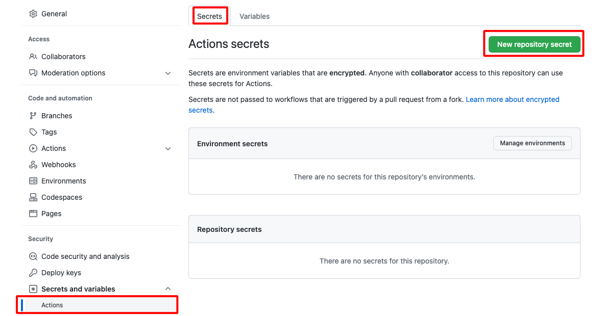
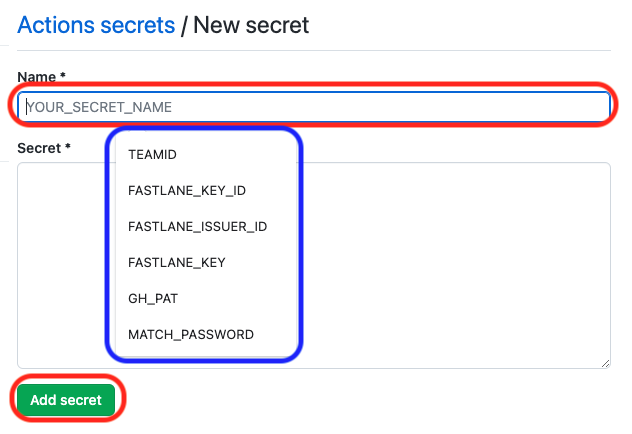

Build Other Apps with Browser
Build Other Apps using a Browser¶
Once Loop 3 was released with the ability to build using a browser, a lot of other apps in the DIY universe added the same feature.
Only apps that are companions to Loop are included on this page.
- LoopCaregiver
- LoopFollow
If you want to build another DIY app that is not included here, look for the file fastlane/testflight.md in the GitHub repository associated with that app and open it in a browser. The instructions for that app should be located in that file.
The same technique is used and the same six Secrets are used for many Open-Source apps. Over time, it is expected that more apps will use the variable ENABLE_NUKE_CERTS to allow automatic creation and update of the required certificates.
- Did you start building with your personal account and want to switch to the recommended organization account for buiding?: Switch to a GitHub Organization Account
Updating / Rebuilding Other Apps¶
If you are coming to this page to update one of the other apps, follow the How to Update or Rebuild instructions provided for the Loop app, but substitute the repository name for the app you want to rebuild for all references to LoopWorkspace.
If you have not added the
VariableENABLE_NUKE_CERTS, do it now. See Add Variable.
Multiple Copies of LoopFollow¶
For the convenience of caregivers who use LoopFollow to monitor multiple people, updates were added in v2.1.2 to make this more convenient. This works regardless of the build method. (Build with Browser or Build with Mac).
- Build up to three instances of
LoopFollow - Customize the name of the app that appears on your phone
- Display the custom name in the main
LoopFollowscreen
Prerequisites¶
-
If you have already built using the Browser Build method, it is easy to build other apps which use the same method. Skip ahead to Fork and Add Secrets.
-
If this is the first repository you have built with the Browser Build method
- Begin reading at Configure to Use Browser: Introduction and Summary
- Follow all the instructions on the Collect Secrets page
- After all your secrets are collected, continue on this page with Fork and Add Secrets.
Fork and Add Secrets¶
If you are not using an organization, stop and reconsider. This page assumes an organization and that you have added your
Secretsand yourVariableto your organization. If not, then for every app youforkyou must individually add those to the repository in your personal account.
You will return to this page after reviewing (but not doing) this step Configure to Use Browser: Fork LoopWorkspace
- Use the same method as that section, but
forktherepositoryfor the app you plan to build to your GitHub organization - LoopCaregiver, expect the
dev branch - LoopFollow, expect the
main branch
Table of App Repositories¶
| App | Fork from this Address | Documentation |
|---|---|---|
| LoopCaregiver | https://github.com/LoopKit/LoopCaregiver | LoopDocs: LoopCaregiver |
| LoopFollow | https://github.com/loopandlearn/LoopFollow | LoopFollow |
LoopFollow Builders: Display Name (Click to Open/Close)
- Would you like the name of your LoopFollow app to be personalized?
- Do you have more than one Looper, so you are using LoopFollow_Second or LoopFollow_Third?
- The 3 LoopFollow repositories enable you to customize the name shown on your phone
After you fork your LoopFollow repository, find the file named: LoopFollowDisplayNameConfig.xcconfig
- Open it in your browser
- Follow the directions to change
display_name- "Save the file" means commit the change to your
mainbranch - It is recommended that you use LF_name, where name is the customized name - that way you can find it in an alphabetic list of apps
- "Save the file" means commit the change to your
The two repositories below are only if you need to follow a second or third looper. All others should use just the table above. The instructions for the second and third looper are otherwise identical to the first looper. Note that LoopCaregiver can follow multiple Loopers; you select the person inside the app.
| Special Case | Fork from this Address |
|---|---|
| LoopFollow for a Second Looper | https://github.com/loopandlearn/LoopFollow_Second |
| LoopFollow for a Third Looper | https://github.com/loopandlearn/LoopFollow_Third |
Configure Secrets for this App¶
When using a GitHub organization, you skip this section:
- All
repositoriesin your GitHub organization use the organizationSecrets and Variables - If you have not already completed Add
Secretsto your GitHub Organization, do it now - Skip ahead to Add Identifiers
Using a Personal GitHub Account¶
After successfully creating your fork of the repository for this app:
-
If you have already built Loop using the Browser Build method, skip ahead to Add Existing
Secrets -
If this is the first repository you have built with GitHub
- You should follow the detailed steps at Configure to Use Browser: Configure
Secrets, except you will apply theSecretsto the repository for the app you are planning to build - Once your 6 secrets have been added, return to this page and skip ahead to Validate
Secretson this page.
- You should follow the detailed steps at Configure to Use Browser: Configure
Add Existing Secrets¶
Open the text file in which you maintain a copy of your 6 Secrets so you can copy each value into the Secrets for this repository.
- Click on the repository for your app
-
Click on the Settings Icon near the top right of your repository
- On the left side, tap on
Secrets and variablesdropdown and choose Actions - After you select Actions, your screen should look like the graphic below

- On the left side, tap on
-
Tap on
New secretand add each of the 6Secrets- You will notices the New secret dialog looks a little different
- As soon as you click on the Name* Box, the 6 Secret Names may show up as a dropdown as shown in the graphic below
- Select each one in turn and paste the secret value into the Secret* box and hit Add secret
- If they do not appear in a dropdown, enter them exactly as shown (suggest copy / paste from your text file)

Be sure to Add Variable to the repository as well as Secrets to enable automatic certificate creation.
Once the Secrets and Variable are added, proceed to the first Action to validate your secrets.
Validate Secrets¶
The first action step is to Validate Secrets. Near the top middle of your Repository fork, click on the Actions tab.
- The first time you click on
Actionswith this repository you'll be informed thatWorkflows aren't being run on this forked repository - Tap on the green button that says:
I understand my workflows, go ahead and enable them
The workflows are now displayed: look at the list on the left side similar to that shown in the graphic below. (You can dismiss the Actions Enabled message using the X near the upper right side if it appears).
- The graphic below is an example from Loop, your screen will show your app and associated repository
This step validates most of your six Secrets and provides error messages if it detects an issue with one or more.
- Click on the "Actions" tab of your LoopFollow or LoopCaregiver repository and enable workflows if needed
- On the left side, click on 1.
Validate Secrets - On the right side, click
Run Workflowto show a dropdown menu- You will see your default branch (
mainfor LoopFollow,devfor LoopCaregiver) - You can select a different branch, but typically, you run the default
- You will see your default branch (
- Tap the green button that says
Run workflow.

The Validate Secrets Action should succeed or fail in a few minutes. Do not continue to the next step until this one succeeds.
- If you see the green check () continue to the next section
- If you see the red
X():- Use the Browser Build Errors page to resolve the error, then repeat the Action
- Quick Reference for Browser Build Errors
Add Identifiers¶
Near the top middle of your Repository fork, click on the "Actions" tab.
- If this is the first
Actionyou run with this repository you'll be informed thatWorkflows aren't being run on this forked repository- Tap on the green button that says:
I understand my workflows, go ahead and enable them
- Tap on the green button that says:
- The graphic below is an example from Loop, your screen will show your app and associated repository
Refer to the graphic below for the numbered steps:
- Click on the "Actions" tab of your repository
- On the left side, click on "Add Identifiers"
- On the right side, click "Run Workflow" to show a dropdown menu
- You will see your default branch (
mainfor LoopFollow,devfor LoopCaregiver) - You can select a different branch, but typically, you run the default
- You will see your default branch (
-
Tap the green button that says "Run workflow"

The Add Identifier Action should succeed or fail in a few minutes.
- If you see the green check () continue to the next section
- If you see the red
X():- Use the Browser Build Errors page to resolve the error, then repeat the Action
- Quick Reference for Browser Build Errors
Review App Identifier¶
Open this link: Certificates, Identifiers & Profiles: Identifiers List on the apple developer site.
After successfully performing the Add Identifiers Action, you will see the identifier for your app with a Name and Bundle ID matching that in the table below. You will see your unique TEAMID embedded in the identifier. (If you previously built this App with Xcode, the name may start with XC but the ending should match.)
| App Name | Name | Bundle ID |
|---|---|---|
| LoopCaregiver | LoopCaregiver | com.TEAMID.loopkit.LoopCaregiver |
| LoopFollow | LoopFollow | com.TEAMID.LoopFollow |
If you build from a second or third
repositoryforLoopFollow, the Name will end inSecondorThirdand Bundle ID will have.Secondor.Thirdat the end.
The LoopCaregiver app requires updates to the Identifiers after they are generated.
The LoopFollow app does not require this extra step. You can skip ahead to Create App in App Store Connect.
Add App Group to LoopCaregiver¶
The LoopCaregiver app requires the addition of an App Group to each of its list of Identifiers. Follow these steps one time to be able to build the LoopCaregiver app.
Check if App Group Exists¶
Open this link to view your applicationGroup Identifiers: App Group Identifiers
- No action is required if there is already an identifier with the
NAMEofLoopCaregiver App Groupand theIDENTIFIERcontains yourTEAMIDin this format:group.com.TEAMID.loopkit.LoopCaregiverGroup - In that case, you can skip ahead to Add
App GrouptoIdentifiers
Create App Group for the LoopCaregiver App¶
Open this link: Register an App Group on the Apple Developer site.
- For
Description, useLoopCaregiver App Group - For
Identifier, entergroup.com.TEAMID.loopkit.LoopCaregiverGroup, substituting your team id forTEAMID. - Double-check the spelling - your
TEAMIDmust be correct and theLoopCaregiverGroupApp Group must match the format shown above- A mistake here means you will not be able to build the LoopCaregiver app until you fix it
- Click
Continueand thenRegister.
Add App Group to Identifiers¶
Click to open this link in a new tab: Certificates, Identifiers & Profiles: Identifiers List on the Apple Developer site.
Table with Name and Identifier for LoopCaregiver¶
All five of these identifiers should be found after running the Add Identifier action on GitHub.
If you do not see them, please sync your LoopCaregiver repository and then run the Add Identifier action. The NAME might begin with an XC if you previously built with Xcode. However, the IDENTIFIER column value should match.
NAME |
IDENTIFIER |
|---|---|
LoopCaregiver |
com.TEAMID.loopkit.LoopCaregiver |
LoopCaregiverIntentExtension |
com.TEAMID.loopkit.LoopCaregiver.IntentExtension |
LoopCaregiverWatch |
com.TEAMID.loopkit.LoopCaregiver.watchkitapp |
LoopCaregiverWatchWidgetExtension |
com.TEAMID.loopkit.LoopCaregiver.watchkitapp.WidgetExtension |
LoopCaregiverWidgetExtension |
com.TEAMID.loopkit.LoopCaregiver.WidgetExtension |
Add LoopCaregiverGroup to each Identifier¶
Find and click on the row for the LoopCaregiver on the Certificates, Identifiers & Profiles: Identifiers List page. Look in the IDENTIFIER column to find com.TEAMID.loopkit.LoopCaregiver. The NAME might begin with an XC if you previously built with Xcode. However, the IDENTIFIER column value should match.
NAME |
IDENTIFIER |
|---|---|
LoopCaregiver |
com.TEAMID.loopkit.LoopCaregiver |
The Edit Your App ID Configuration screen will open.
-
In the
App Servicescolumn, scroll down to theApp Groupsrow- Ensure the check box (under the
Capabilitiescolumn) forApp Groupsis checked - Tap on the word
EditorConfigure, whichever shows up- This opens the
App Group Assignmentscreen - Check the box by
LoopCaregiverApp Group that uses yourTEAMIDingroup.com.TEAMID.loopkit.LoopCaregiver - If the box by
Loop App Groupis checked, you should uncheck it - Your screen should be similar to the graphic below
- If you made any changes, tap
Continue, otherwise, tapCancel
- This opens the
- Ensure the check box (under the
-
If you modified settings for an identifier, the
Savebutton at the top right will become active. Click onSavebefore leaving this page - otherwise, the change does not take effect.- Tap on
Save - This opens the
Modify App Capabilitiesconfirmation screen - Click on
Confirm
- Tap on
-
If you did not need to make changes, the
Savebutton will not be active.- Tap on the
< All Identifierslink at the top left
- Tap on the
-
The full list of Identifiers should be displayed again.
-
Continue down the list until every identifier in the table below has the
App GroupforLoopCaregiver App Groupadded to it. (DO NOT SELECT theLoop App Group) If you miss any, the GitHub action to3. Create Certificateswill succeed but the GitHub action to4. Build LoopCaregiverwill fail.
NAME |
IDENTIFIER |
|---|---|
LoopCaregiver |
com.TEAMID.loopkit.LoopCaregiver |
LoopCaregiverIntentExtension |
com.TEAMID.loopkit.LoopCaregiver.IntentExtension |
LoopCaregiverWatch |
com.TEAMID.loopkit.LoopCaregiver.watchkitapp |
LoopCaregiverWatchWidgetExtension |
com.TEAMID.loopkit.LoopCaregiver.watchkitapp.WidgetExtension |
LoopCaregiverWidgetExtension |
com.TEAMID.loopkit.LoopCaregiver.WidgetExtension |
Create App in App Store Connect¶
Same procedure as for the Loop app
You will follow the same procedure as you did with the Loop app.
You will be following the directions below to create an App in App Store Connect if you don't already have one.
This requires you to provide some information. Examine the table below for the bundle ID associated with your app.
| App Name | Bundle ID |
|---|---|
| LoopCaregiver | com.TEAMID.loopkit.LoopCaregiver |
| LoopFollow | com.TEAMID.LoopFollow |
If you build from a second or third
repositoryforLoopFollow, the Bundle ID will have.Secondor.Thirdat the end.
-
Open this link: App Store Connect / Apps to view your apps; log in if needed.
-
If this App already exists, you can continue to Create Certificates
-
Click the Add Apps button or the blue "plus" icon and select New App as shown in the graphic below

-
The New App dialog box opens and should appear similar to the graphic below. Before you fill anything out, make sure your Bundle ID is available in the dropdown menu. If you do not see the Bundle ID for your app; back out of this screen and follow the directions in Configure to Use Browser: Find My Loop, where you'll be finding App Name instead of Loop.
- Select "iOS". For LoopFollow you can also select "macOS" if you own a Mac with macOS 11 or later.
- Enter a name: this will have to be unique
- You could start with "App Name ABC" where ABC are your initials
- If that is already taken, you can add a number, for example, "App Name ABC 123"
- This name is what you see on the App Store Connect list and in the TestFlight app
- Once installed on your phone, you will see the actual app name
- You can Change the App Store Connect Name later if you want
- Select your primary language.
- Choose the bundle ID for your app
- SKU can be anything; for example "123" but must be unique across all your apps, so try 1234 or 12345 depending on how many apps you build with this method
- Select "Full Access".

-
Click Create but do not fill out the next form. That is for submitting to the app store and you will not be doing that.
You are done with the create app step.
You will use this same browser location to complete the next step. Tap on the TestFlight tab at the top of the page.
Add Users to TestFlight for App¶
If you are not already on your app page because you just created it, use this link to get there: App Store Connect / Apps. Find your app and click on it and then select the TestFlight tab at the top of the page.
You need to configure a TestFlight Internal Testing Group for each app you build and invite the users (including yourself).
- Each person added to the Internal Testing Group gets an invitation to join the group for this app
- Then after each successful build of the app, group members will get a notification when the new build is transferred to TestFlight and is available for use
- They open the TestFlight app on their phone to install the new build
If you need detailed instruction, visit Configure to Use Browser: TestFlight Users Overview.
Create Certificates¶
- The graphic below is an example from Loop. Your screen will show your app and associated repository.
Refer to the graphic below for the numbered steps:
- Click on the "Actions" tab of your Repository repository
- On the left side, click on "Create Certificates"
- On the right side, click "Run Workflow" to show a dropdown menu
- You will see your default branch (
mainfor LoopFollow,devfor LoopCaregiver) - You can select a different branch, but typically, you run the default
- You will see your default branch (
-
Tap the green button that says "Run workflow".

-
Wait a minute or two for the action to finish
- If you see the green check () continue to the next section
- If you see the red
X():- Use the Browser Build Errors page to resolve the error, then repeat the Action
- Quick Reference for Browser Build Errors
Build App¶
The graphic below is an example from Loop, your screen will show your app and associated repository
If you are building the LoopCaregiver app, skip ahead to Build Action.
Display Name Customization for LoopFollow¶
If you build
LoopFollowfor one, two or three loopers, you may choose to customize yourforkorforksto insert a custom display name.
- Find and click on the file
LoopFollowDisplayNameConfig.xcconfig- Tap the pencil icon so you can edit the file
- The last line says
display_name = LoopFollow(orLoopFollow_SecondorLoopFollow_Third)- Insert your custom name so the last line says
display_name = LF custom name- Click on commit changes and chose to commit directly into the
mainbranchContinue to build as instructed below. After you install the app on your phone, iPad or Mac via TestFlight, that custom name is what is displayed. The prefix LF is suggested to make it easier to find the custom named
LoopFollowapp in the list of apps, but is not required.
Build Action¶
Refer to the graphic below for the first four steps:
- Click on the "Actions" tab of your Repository repository.
- On the left side, click on "Build App Name".
- On the right side, click "Run Workflow" to show a dropdown menu
- You will see your default branch (
mainfor LoopFollow,devfor LoopCaregiver) - You can select a different branch, but typically, you run the default
- You will see your default branch (
-
Tap the green button that says "Run workflow".

-
Wait a few minutes to make sure there is not an early failure
- If you see the red
X():- Use the Browser Build Errors page to resolve the error, then repeat the Action
- Quick Reference for Browser Build Errors
- If you see the red
- If the process appears to be happening without an error, go do something else for a while. The build should take less than half an hour (these tend to build faster than the Loop app.
- When you see the green check () continue
- If there is a late-appearing error, then use Quick Reference for Browser Build Errors
- Your app should eventually appear on App Store Connect.
Build Errors¶
Refer to the Browser Build: Build Errors to find your error.
Please do not remove an existing app if you have trouble building a new one. Your build error is not cause by any existing app.
Removing App Warning
If you remove an app and later want to restore that app, you might not be able to.
For more information, see Do Not Remove an App.
Install on Phone¶
The Install on Phone walks you through the steps to install the app to a phone. When going through those steps, replace your App Name for Loop. Everything else is the same.
Switch to a GitHub Organization Account¶
If you are already using an Organization account for building, no need to read this section - you are done with this page.
There are a number of folks who started using the Browser Build method when only the Personal account method was documented. This section is meant to assist them in switching to an Organization account.
Set up a Free GitHub Organization¶
Detailed instructions for creating an organization are found at Create a Free GitHub Organization.
The directions below summarize that detailed section. Use your GitHub username instead of my-name.
Prerequisite: You need a personal GitHub account. If you do not already have a personal GitHub account, click on New GitHub Account.
- You will create a new GitHub organization account with a username of
my-name-org(of course naming is up to you)- Log into your GitHub account (username
my-name) and click on your icon (at upper right) and choose Settings - On the left side-bar, click on Organizations
- In the new view, click on New Organization and choose Free for the plan by clicking on
Create a free organization. - In the
Set up your organizationscreen:- Enter
my-name-orginto theOrganization namebox - Enter the same email you use for
my-nameaccount - Select this organization belongs to
My personal account - Check the box to accept the terms of service
- Tap on the next button
- Enter
- Log into your GitHub account (username
- You now see a Welcome screen
- Unless you plan to collaborate with others, just tap
Complete setup - You can always add others at a later time
- Unless you plan to collaborate with others, just tap
- Confirm access by entering the same password as you use for
my-name
Use the Free GitHub Organization¶
There are two steps to using this account moving forward:
-
One-time only: You need to add your 6
Secretsand 1Variableto this organization account (instructions are in next section) -
For each repository: you need to
forkfor each app you wish to build to the newmy-name-orgaccount- When you do the fork, there will be a dropdown menu under Owner for you to select the account for the
fork- For detailed directions with a GIF, see Create the Fork
- Choose the organization account
- Refer to the Table of App
Repositorieswhen building apps other than the Loop app
- When you do the fork, there will be a dropdown menu under Owner for you to select the account for the
Add Secrets to your GitHub Organization¶
You use the same Secrets and Variable that you have saved in your Secrets Reference File.
Detailed instructions for adding these to an organization are found at Configure Secrets.
The directions below may be sufficient for some.
- Make sure the URL is
github.com/my-name-org - Click on Settings
- In the left pane, scroll down to find
Secrets and variablesand click on the dropdown symbol and chooseActions - At this point, tap on
New organization secretand add your 6 secrets - Then tap on the
Variabletab and enter your Variable- For details on adding the variable, see Add Variable
Build with Organization¶
For every build, you will use the repository in your organization account. Your personal account is maintained to give you access to GitHub and holds your GitHub personal access token.
If you previously built with your personal account, all the Identifiers and the App are already configured over at Apple. You simply Create Certificates and Build the app.
- If this is your first build of an app, then yes - you must do all the steps
- If this is switching from personal account for building to organization account for building, then you are using your already configured Identifiers and App
- New certificates must be created because those tie a particular GitHub username to the particular Apple developer ID and your organization username differs from your personal username
WARNING - If you have
forksof DIY apps in your originalmy-nameaccount that are configured to build automatically, you want to disable building and have only themy-name-orgaccount be configured for automatic building. Refer to Disable Building for Personal GitHub account.
Disable Building for Personal GitHub account¶
Once you have your apps building as you expected from the my-name-org organization account, you should configure your personal account to stop any automatic building that may be taking place.
Option 1: Disable Build Action¶
You can disable the build actions from the repositories in your personal account
- Pro: You leave any work you previously did alone in your personal account
- Con: You might get confused and try to build in your personal account instead of your organization account
- Here are the instructions to disable the build actions:
- Click on your icon at upper right of GitHub browser
- Select
Your Repositories - Notice the github address now says
my-nameinstead ofmy-name-org - Select the repository you wish to disable build actions for and follow these instructions
- It is the Build action that kicks off the update and build steps, so simply disabling the one action is sufficient
Option 2: Delete repository¶
You can delete the DIY repositories from your personal account
- Pro: You can't get confused about where you should be building
- Cons:
- If you have already generated some customizations there, it is safest to not delete the repository
- If you have pull requests open from your personal account, DO NOT DELETE that repository - that would automatically close those open PR
- Here are the instructions if you decide to delete the repositories
- Click on your icon at upper right of GitHub browser
- Select
Your Repositories - Notice the github address now says
my-nameinstead ofmy-name-org - Select the repository you wish to delete and follow these instructions
- GitHub Docs: Delete a repository